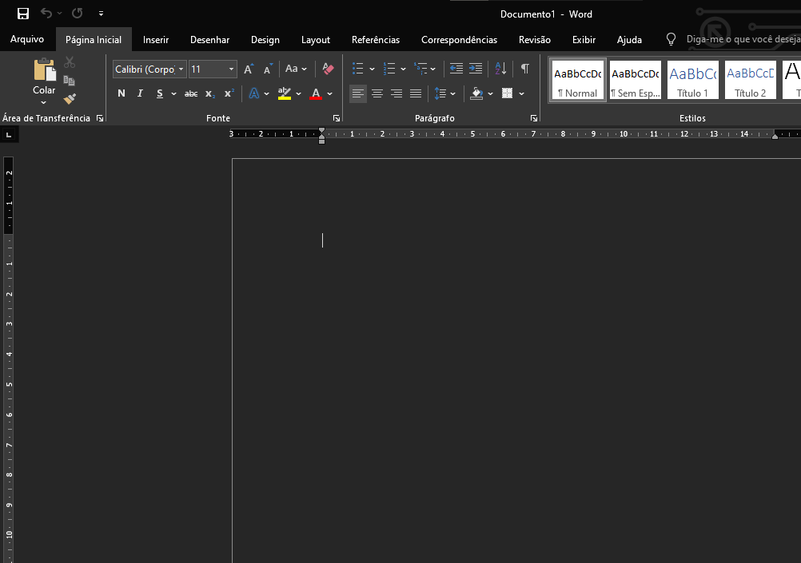
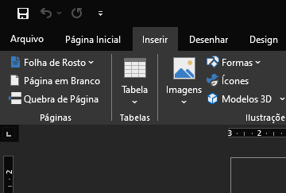
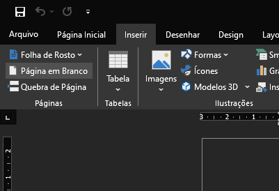
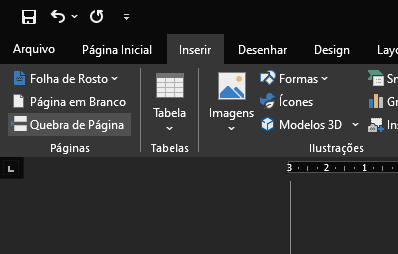

É possível colocar uma nova página no Word com a função de inserção ou de quebra de página.
Esses recursos do aplicativo da Microsoft facilitam a edição de texto, especialmente quando é preciso incluir novos trechos no meio de um documento.
As opções “Inserir página em branco” e “Inserir quebra de página” podem ser acionadas nas versões do Word para Windows, macOS e Web.
Como colocar uma nova página no Word
Nova página em branco
1 - Posicione o cursor onde deseja uma nova página;

2 - Acesse “Inserir” no menu superior;

3 - Clique em “Página em branco”.

Pronto, simples assim!
Quebra de página
1 - Coloque o cursor onde quer que uma página termine e a próxima comece;
2 - Acesse “Inserir” no menu superior;
3 - Escolha “Quebra de página”.

E está pronto!